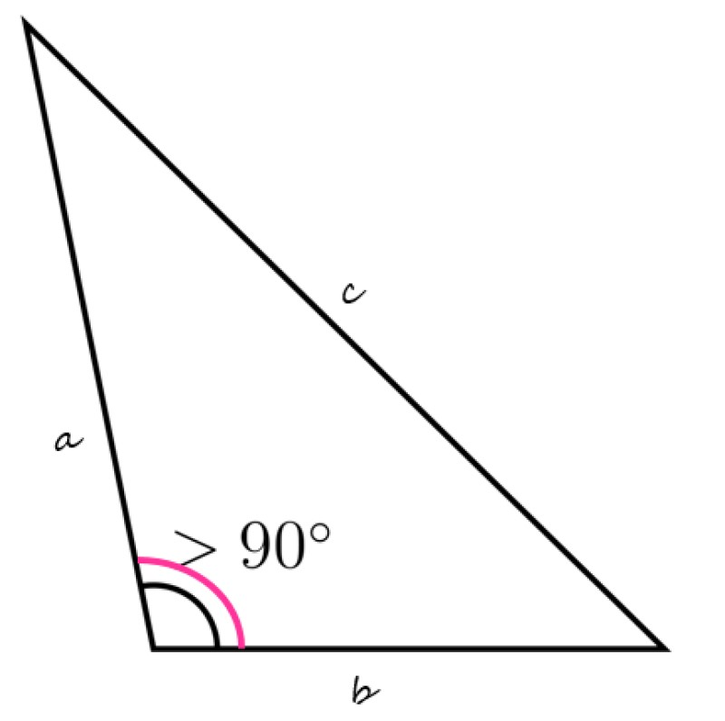

TRIÁNGULO OBTUSÁNGULO

El triángulo obtusángulo es aquel donde uno de sus ángulos interiores es obtuso, es decir, mayor que 90º. Asimismo, los otros dos ángulos son agudos, lo que significa que miden menos de 90º
Los triángulos obtusángulos también son triángulos oblicuángulos ya que ninguno de sus ángulos internos es recto.
Los triángulos acutángulos, que tienen tres ángulos agudos, ingresan en esta misma calificación.
Si el triángulo cuenta con un ángulo recto, en cambio, se lo califica como triángulo rectángulo.